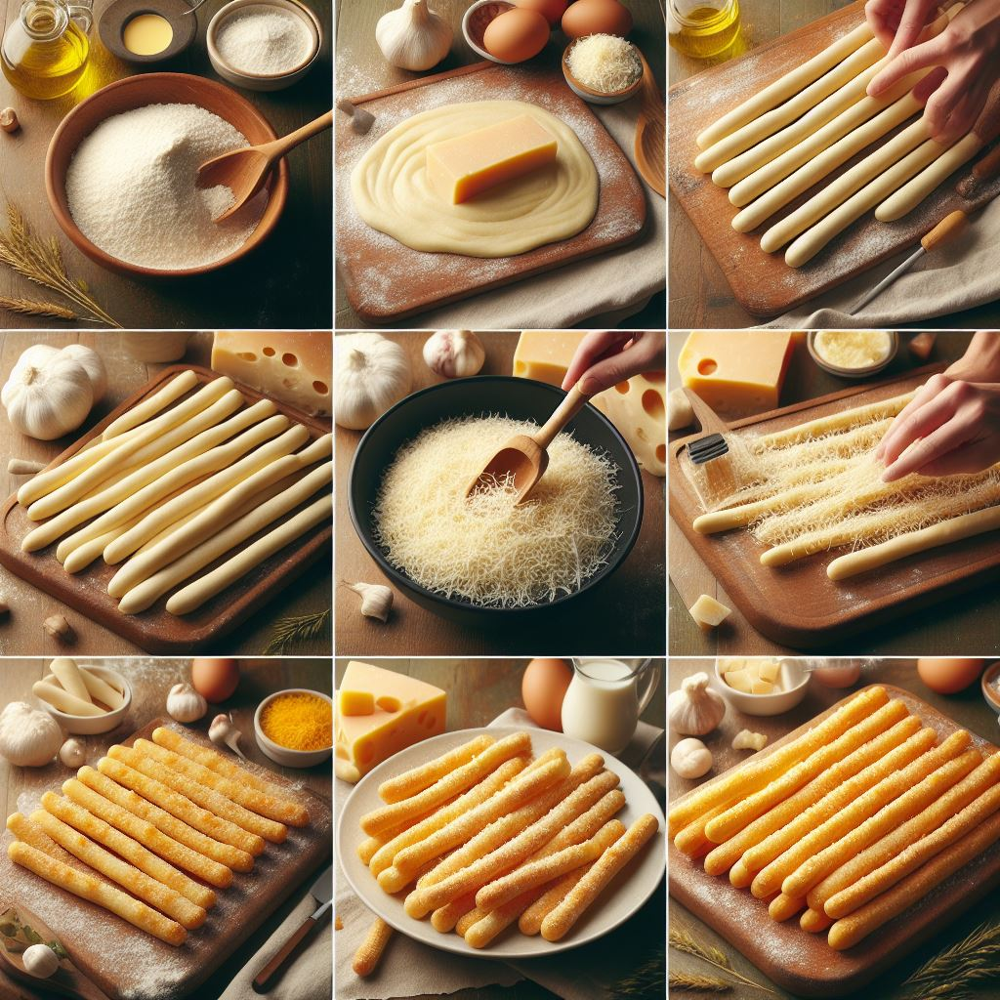

Description
Elevate your snacking game with our Cheesy Italian Breadsticks (Grissini) recipe. These crunchy delights are infused with savory cheese flavor, making them the perfect accompaniment to soups, salads, or enjoyed on their own as a satisfying snack.
Ingredients
- 1 ½ cups all-purpose flour
- 1 teaspoon salt
- 1 teaspoon sugar
- 1 tablespoon active dry yeast
- ½ cup warm water
- 2 tablespoons olive oil
- ½ cup grated Parmesan cheese
- 1 teaspoon garlic powder
- 1 teaspoon dried oregano
- ½ teaspoon black pepper
Instructions

- In a large mixing bowl, combine flour, salt, sugar, and yeast. Gradually add warm water and olive oil, stirring until a dough forms.
- Knead the dough on a floured surface for 5-7 minutes, or until smooth and elastic.
- Place the dough in a greased bowl, cover with a clean kitchen towel, and let it rise in a warm place for 1 hour or until doubled in size.
- Preheat the oven to 400°F (200°C) and line a baking sheet with parchment paper.
- Punch down the risen dough and divide it into 12 equal portions. Roll each portion into a thin rope, about 8 inches long.
- Place the breadsticks on the prepared baking sheet, leaving space between each one.
- In a small bowl, combine grated Parmesan cheese, garlic powder, dried oregano, and black pepper. Sprinkle the mixture over the breadsticks.
- Bake for 12-15 minutes, or until the breadsticks are golden brown and crisp.
- Remove from the oven and let them cool slightly before serving. Enjoy your cheesy Italian breadsticks!
Savor the Flavor of Italy!
Buon appetito! You've just created a batch of delightful Cheesy Italian Breadsticks (Grissini). We hope you enjoy every crispy, cheesy bite! Share your baking triumphs with us on social media using #CookWithOdinRecipes. For more delectable recipes and culinary inspiration, explore our recipe collection. Happy snacking!